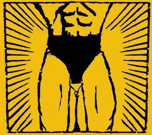
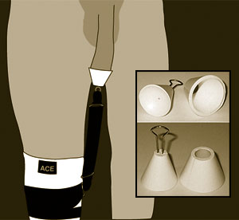

The Fantastic Foreskin
Circumcised men are employing weights and pulleys
to cover themselves back up
By Craig Malisow
Published: July 12, 2007
"I'm wearing it right now," John Long says. "But I
didn't wear it most of the day yesterday."
Subject(s): foreskin restoration, circumcision
The 27-year-old bookstore employee is talking about
the device attached to his circumcised penis, beneath
his clothes. Picture a miniature silicone lampshade
with a handle on the wide end. It's cupping the head of
his johnson, and the skin of the shaft is pulled
forward over it. An elastic band runs from the handle
to a knee brace, applying constant tension to the skin
on the penis, stretching it forward, coaxing it to
grow.

Circumcised men are employing weights
and pulleys to cover themselves back up
The device can pinch or get bunched up at times, but
overall, it's an effective vehicle for Long's mission,
which is to create a faux-foreskin out of existing
shaft skin. The device is called the TLC Tugger, and
Long bought it online from its inventor, an engineer in
suburban Chicago. The Tugger's motto is: Improving the
world, one penis at a time.

The TLC Tugger hopes to improve the world, one penis
at a time.
Long's wife, Melissa, discovered the site after the
subject of circumcision came up on an online parenting
forum. When one guy introduced himself by saying he was
restoring his foreskin, Melissa was intrigued. She did
some research on her own, finding that there were many
different contraptions out there. The TLC Tugger Web
site jumped out at her for one simple reason: It
features an instructional video, with the inventor
stuffing his junk into the lamp shades. (Melissa's
initial reaction describes it best: "I cannot believe
this guy is putting this thing on his thing.")
But what started out as an amusement for the couple
soon turned serious. They felt their eyes opening to
the allegations on the anti-circumcision Web sites:
Decreased sensitivity among cut men; "mutilation" in
general; sexual partners of uncircumcised men raving
about the superiority of "intact" guys.
"I got kind of pissed off," John says. "The more I
learned, the more angry I got."
His anger is shared by quite a few. Since there is
virtually no effective procedure to surgically restore
foreskin (see "Under the
Knife"), Long and others have had to find
alternatives - which ultimately don't restore foreskin
at all, but give some "restorers" the feeling they are
making themselves whole.
Since the dawn of the modern restoring movement in the
early '80s, thousands of men have attached what look
like Inquisition-era torture devices to their privates
in order to reclaim what they feel was butchered at
birth. Progress is slow and the equipment is
embarrassingly cumbersome, but proponents say it is
worth it.
The anti-circ community got the sad news February 13:
Clifford Spooner, a pioneer in the restoration
movement, died of cancer in Washington state. According
to the obit on the International Coalition for Genital
Integrity's Web site, Spooner cofounded Brothers United
for Future Foreskin (BUFF) in 1982.
Spooner's disdain for circumcision sparked when his
mother had him circumcised at age ten, according to the
obit - which does not state the reason for the delayed
procedure.
Spooner would grow up to advocate, along with his
compatriots at BUFF, a restoration method whereby the
skin of the shaft is stretched over the head and taped
in place. (In cases where the tape wouldn't stick, BUFF
suggested, you could "paint the skin with tincture of
benzoin, which is also known as friar's balsam").
Ten years later, BUFF was eclipsed by the San
Francisco-based National Organization for the
Restoration of Men and other anti-circ sites,
perhaps due in part to BUFF's debunking the importance
of penile hygiene: "Contrary to the old wives' tale, it
is not necessary to wash the penis every day."
But the term "foreskin restoration" is misleading,
since all these men are doing is stretching existing
shaft skin.
A quick aside for Foreskin 101 (in a nutshell): The foreskin is an
elastic sheath consisting of an outer layer of
"regular" skin and an inner layer of mucous membrane,
like the underside of the eyelid. The foreskin keeps
the glans covered and lubricated, and retracts when the
penis is erect. "Intactivists" believe the foreskin is rich in
nerve endings that are severed upon circumcision.
The debate over the merits of circumcision doesn't
exist only among the general public - many doctors are
divided on the subject, battling each other with
studies that take opposing views on circumcision's
protection against HIV, cancer, urinary tract
infections and other problems.
In 1999, the American Academy of Pediatrics issued a
policy
statement on circumcision that was also adopted by
the American Medical Association: "Existing scientific
evidence demonstrates potential medical benefits of
newborn male circumcision; however, these data are not
sufficient to recommend routine neonatal circumcision.
In circumstances in which there are potential benefits
and risks, yet the procedure is not essential to the
child's current well-being, parents should determine
what is in the best interest of the child." (Because of
doctors' general lack of interest in foreskin
restoration, there do not appear to be any studies on
the efficacy of restored foreskin warding off
disease).
Today, restoring men have opportunities for support
that Spooner and the old guard probably couldn't
imagine - forums such as www.foreskin-restoration.net, where
guys can debate the efficacy of different products, ask
tough questions ("Does anyone have experience tugging
while going through airport security?") and post
pictures of their progress. Most restorers measure
progress via the coverage index ("CI"), a standard
whereby cut men can measure the amount of any existing
foreskin they may have at the beginning of the
restoration process and the amount of the foreskin
during and after the process. Determining one's CI
number requires one to spend a considerable amount of
time studying photographs of flaccid and erect penises.
In fact, any serious restorer not only examines
dick-shots as if they were painted on the Sistine
Chapel, he discusses every nanometer of his knob in
incredible detail. Nothing is out of bounds. It's a
place where one man can tell another man, "Looking at
my circumcision scar when erect, you can see that there
is almost twice as much skin on the bottom as the top"
and nothing bad happens.
This open-mindedness comes in handy for those looking
to build, rather than buy, restoration devices. More
than a few restorers appear to be natural MacGyvers, to
wit: "Currently, I'm using a one-inch-diameter pipe
coupling with all [of] the inside covered with aquarium
sealant."
Obviously, if someone's going to slather a pipe in
aquarium sealant and tie it to his penis, he should
have a good reason. And most of the restoring men
contacted for this story say they have one of the best
reasons of all: They believe they were mutilated for a
myth, denied full sexual pleasure, and completely
violated.
For some, it's a late awakening. Guerin Woodgate Jr.,
29, says he never thought much about his circumcision
until he stumbled upon some anti-circ Web sites about
ten years ago.
"As soon as I started reading the information, I
suddenly felt like I was missing something that was
important to me," he says, "and immediately felt
compelled to start finding a way to get it back."
Woodgate, an IT consultant, says he sought advice from
urologists, who brushed him aside, so he dived into
nonsurgical restoration methods. The first technique he
tried was a relatively common one among novice
restorers, partly because it involves ordinary
materials: one empty film canister (35-mm), batteries
(size C, in Woodgate's case), a suspender-type strap,
tape and a binder clip.
After spending $1000 on different devices,
Woodgate settled on medical-grade tape.
Woodgate cut out the bottom of the film canister,
making a tube, and punched a hole in one side, so he
could have one hook end of the binder clip sticking
out. He then inserted the head of his penis into the
canister, rolled the skin from his shaft over the tube,
taped it in place, and attached a strap weighted with
two batteries (taped together) to the binder
clip.
Sure, it may sound like fun, but Woodgate soon ran
into problems.
"Actually, inserting your penis is quite difficult
inside of a film canister," he says. "You look at a
film canister and you think, 'that's pretty big
around.' And you don't realize, actually, the natural
diameter of a penis and how large in diameter it really
is until, even flaccid, you try to insert your penis
inside this thing. Rolling the skin over was very
difficult, especially because of the lack of skin that
I had."
Next up was the PUD (Penile Uncircumcising Device)
Tugger, sold by a company called American Bodycrafters
and advertised as "the most sophisticated foreskin
restoration product to date." The PUD is essentially a
stainless-steel cylinder worn over the glans, with
shaft skin taped around it. Like the canister method,
the PUD includes a hook to hold additional weights.
Another benefit, according to one PUD sales site: "All
of our products come with a urinary passage so removal
during urination is not necessary." (For those who want
to lengthen the penis while restoring the foreskin,
American Bodycrafters sells something called the
VacuTrac, which looks like it violates the Geneva
Convention.)
But, also like the canister method, the PUD didn't
work for Woodgate. He says it was effective, but
awkward.
"By the time you put this thing on - it's 16 ounces -
and you start to walk around, it moves around in your
pants leg," he says, "and people think, 'Man, that man
has a long penis'...And that's not really my deal. I'm
not trying to advertise this."
After flushing an estimated $1,000 down the drain,
Woodgate ultimately decided he liked the simplest
method of all: a two-inch strip of medical-grade tape.
All he does is pull his shaft skin forward and tape it
in place. While it's certainly a lot less cumbersome
than tubes and batteries, the tape method also takes a
lot longer to yield significant results. Woodgate
believes he'll have to wear tape for 20 years before he
reaches his ideal CI number. But the simple act helps
instill something he believes his circumcision stripped
him of – control over his own body.
"I [felt] like something was taken away...I actually
had a sense of anger," he says. "And it wasn't anger
towards anyone, it was just, I was angry about the
situation, that there was absolutely nothing I could
do. I couldn't reverse it." He adds later: "I can
control so much in my life, and that was one thing I
could not control, I could not change."
Like other restorers, Woodgate says that keeping the
glans covered - a function of natural foreskin - has
made it more sensitive. Here's something he suggests
circumcised guys do: "If you go into the bathroom, take
your pants down and take a good look at your penis. If
you've been circumcised and you're 20 years or older,
the head of your penis...will appear to be somewhat dry
and calcified. And the older that you get, the more
calcified...the head of your penis is, rubbing inside
of your briefs or boxers. And so what happens is, the
skin's own mechanism is to naturally harden the
skin...."
But now that his glans is covered most of the time,
"It's like the difference between touching the hands of
a baby and touching the hands of a 30-year-old
man."
And while taping your penis every day might seem like
a chore, Woodgate says it's just like any other part of
a person's normal routine.
"You don't even think about it - you brush your teeth,
you comb your hair," he says, "Well, I cut a two-inch
long piece of tape and put it on my penis and go. And
it takes me all of ten seconds."
Woodgate says his boyfriend, who is circumcised, has
been supportive of the restoration. It may have taken
him a little time to get used to it, Woodgate says, but
the couple is now at the point where Woodgate's
boyfriend pre-cuts pieces of tape Woodgate can carry in
his shaving kit when he travels.
While Woodgate says he's committed to using tape for
the next 20 years, he wishes he could find a doctor
willing to investigate the possibilities of true
foreskin restorations. He'd like organ donation to
include foreskin, for skin grafts that could do a whole
lot more than tape or batteries.
He's going to be waiting a while.
The study of foreskin sensitivity has not been a
priority among most physicians.
Because conventional American medical wisdom has
historically decided circumcision reduced the chance of
infection and was more hygienic overall, whether
foreskin made sex more pleasurable just did not seem
important.
But some physicians are convinced of the foreskin's
extreme sensitivity - none more so than the members of
the Seattle-based Doctors Opposing Circumcision. This
advocacy group claimed a victory when its members
coauthored a recent study that concluded – big
surprise here – that uncircumcised men have more
sensitive penises.
Published in the April 2007 issue of the British
Journal of Urology, the study measured the sensitivity of
159 cut and uncut men with "Semmes-Weinstein
monofilament touch-test sensory evaluators," which is a
fancy way of saying the doctors tickled the dudes' junk
with fishing line. (Under the journal's "conflict of
interest" section, it reads "none declared." This is
followed by the fact that the study was funded by the
National Organization of Circumcision
Information Resource Centers, which seems fine, as
long as no one looks at the group's acronym.)
The doctors claimed to have mapped the "fine-touch
pressure thresholds" of cut and uncut penises - after
controlling for things like type of underwear worn and
education level, of course. In all, 19 pressure points
were identified, and these were the portions removed or
otherwise affected by circumcision.
Besides a critique of the study in the June 2007 issue
of the BJU, the study seems to have been largely
ignored. It appears that doctors just aren't that
interested in foreskin. Most of the physicians
interviewed for this story - well, at least the ones
who returned phone calls - thought the idea of foreskin
restoration was, A: stupid; B: delusional; C: both of
the above.
Houston plastic surgeon Berkeley Powell, past president of
the Texas Society of Plastic Surgeons,
said with a bit of a chuckle, "I'm sitting here just
kind of amazed. I didn't know this was going on. But I
read your paper - this is what I read it for, to stay
abreast of current events."
Powell reiterated the fact that restorers weren't
actually restoring anything, but added: "More power to
'em for trying."
Michael Coburn, chief of urology at
Ben Taub and a professor at Baylor,
was surprised to hear about nonsurgical restoration:
"Why are these people wanting to do that?"
As far as uncircumcised men having greater
sensitivity, Coburn says, "There's not really any medical evidence to support
that."
Still, many restoring men claim that the process has
enhanced sex for both themselves and their partners.
This concept was even the thesis for a book written by
the wife of a restoring man, Sex as Nature Intended
It. Author Kristen O'Hara cites a survey she
conducted claiming that women prefer uncut men nine to
one. O'Hara's Web site for the book includes
testimonies from herself and other (unidentified) women
who liken sex with a circumcised man to being pounded
with a jackhammer, while uncut men are more gentle and
responsive. As supporting evidence, she includes
alleged testimony from a woman who writes that her
first sexual experience involved a guy lying down
beside her at a beach, spontaneously masturbating and
then raping her. Her next sexual experience, a year
later, was a pleasant romp with an uncircumcised man
who did not rape her. Case closed.
Melissa Long swears that sex is better now that her
husband is restoring. Previously, she says, sex had
always been painful.
"It was almost like a relief to me to know that there
wasn't something wrong with me," she says, later
adding, "He's more sensitive, so he doesn't have to,
like, thrust as hard - there doesn't have to be as much
friction for him to get the sensation, so it's
gentler." In an e-mail, she likened the
before-and-after experiences to "going from watching TV
on an old black-and-white set to a digital Technicolor
plasma screen with surround sound."
Enhanced sex has been especially rewarding to Keith
Akers, who started restoring about five years
ago.
"I credit the restoration with the fact that I now
have a 17-month-old son - who, by the way, was not
circumcised," says the 47-year-old Atascocita
man.
Akers started restoring with the help of an O-ring and
now uses the TLC Tugger, with great results. The proof
is in the penis: Akers says he's gone from less than 1
on the CI scale to a 3.5. His goal is to have "full
coverage" when he's erect.
Akers says he more than tripled his CI number.
While the promise of better sex was his primary
motivation to restore, Akers mentions an added
benefit.
"Part of it was to make myself different from what my
dad is," he says, adding later, "It was something that
I did for myself because I have no relationship with my
dad to speak of at all...at the time that all of this
started, I...finally came to grip with some things and
I got some treatment for some chronic depression and
with the family issues...this was another thing that
kind of helped me feel better about myself and to kind
of set a little distance between me and the way I
viewed some of the problems."
He also understands what brings others to the
restoring community: "A lot of the guys on these Web
sites, they really feel violated, that something was
torn away from them. I don't feel that as strongly...as
they do about it, but I can see their point. And I can
agree with them."
Ron Low remembers the moment he decided to restore the
way someone might remember a wedding anniversary.
About ten years ago, Low (sounds like "cow") noticed
his libido was flat-lining. Sex just wasn't what it
used to be.
"For me, intimacy just wasn't getting any better. It
was getting worse. And at the same time, it was getting
better for my wife. You know, here we are approaching
40, and I felt like...'I can't believe nature is so
cruel that intimacy would just get worse and worse and
this is all I have to look forward to.'"
He found some information about restoring online, and
then came that magic moment: "It was April 1, 2001, at
about nine o'clock in the evening," he says, speaking
on the phone from the Chicago suburb of Northbrook. He
and his wife "were sitting in front of the TV set and I
said, 'Hon, I've got to tell you about something. I'm
going to start applying tape to my penis every day
because I want to stretch my skin and make a new
foreskin grow.' And she said, 'Well, that's crazy.
That's ridiculous.' And I had to look her straight in
the eye and tell her I was deadly serious. 'It's not
crazy, and I'm going to need your support, dear.'" And
she's been supportive ever since.
Low started with the film canister method, but used
his training as an engineer to design a new device -
what turned out to be the TLC Tugger. He says he
secretly tested it on himself, not wanting to announce
his invention until he knew it worked. Even his mother,
who lives next door, did not know her son was walking
around constantly stretching the skin of his
penis.
"For a long time she would see me wearing shorts and
notice a knee brace on one leg, which was there to
conceal the tugging straps, and she would express
concern about my poor knee," he says. "I usually just
said I strained it."
But after 21 months' tugging time, his libido
rejuvenated, he offered his device on eBay. There was
immediate interest, but he hadn't actually made any
more because he wasn't sure if anyone would actually
want to buy any.
He started making the molds for the Tugger's two cones
in the family kitchen, but, with the greater demand, he
now has a "dedicated lab oven" in his basement, with
the capability of making about 12 Tuggers a day.
Low moderates an online Tugger user group, which he
launched last fall and which now has 1,000 members. He
says he ships the product all around the world. (Per
his Web site, he offers "free shipping to Israel,
Muslim states and third-world nations where ritual
mutilation of children occurs.")
He looks forward to the day when the Tugger and other
restoration devices are sold at the local drugstore.
Until then, he's just one dude making dick-cones in his
basement. The device hasn't made him rich, but none of
the people selling restoring devices online appear to
be in it for the money. They appear to be genuinely
interested in helping other guys feel at peace with
their penises.
Guys like John Long, who admits that, since his second
child - a son - was born seven months ago, he's been
too busy to wear the Tugger consistently.
"People going to get into it...you need to be
committed to it: It can be a long haul," he says. He's
happy with the results he's seen so far, but a little
bitter that he has to go through the process in the
first place.
His wife describes it best in an e-mail: "When our son
was born in December, we left him intact. For the first
few months, during diaper changes, my husband would
look at our little boy and shake his head, saying
'Lucky little bastard.' But we know that by the time
our son is old enough to know the difference, his dad
will look like him, too!"
|